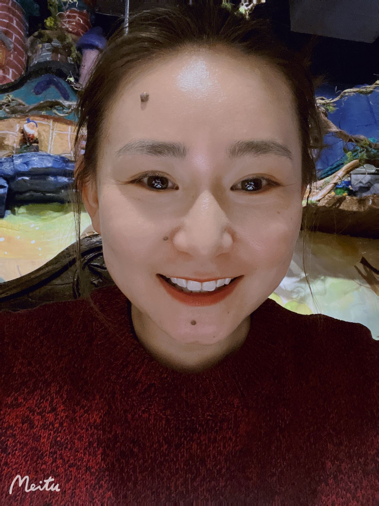
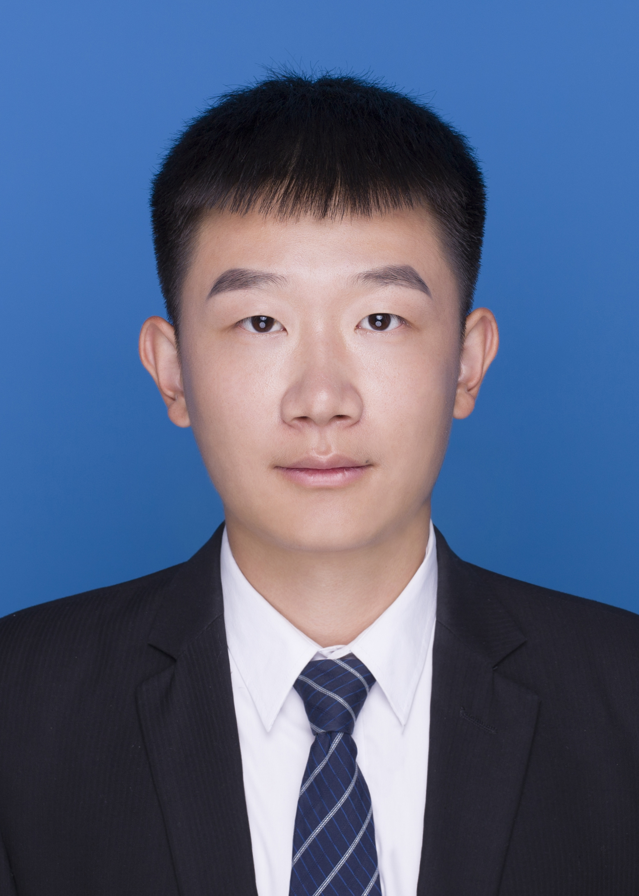
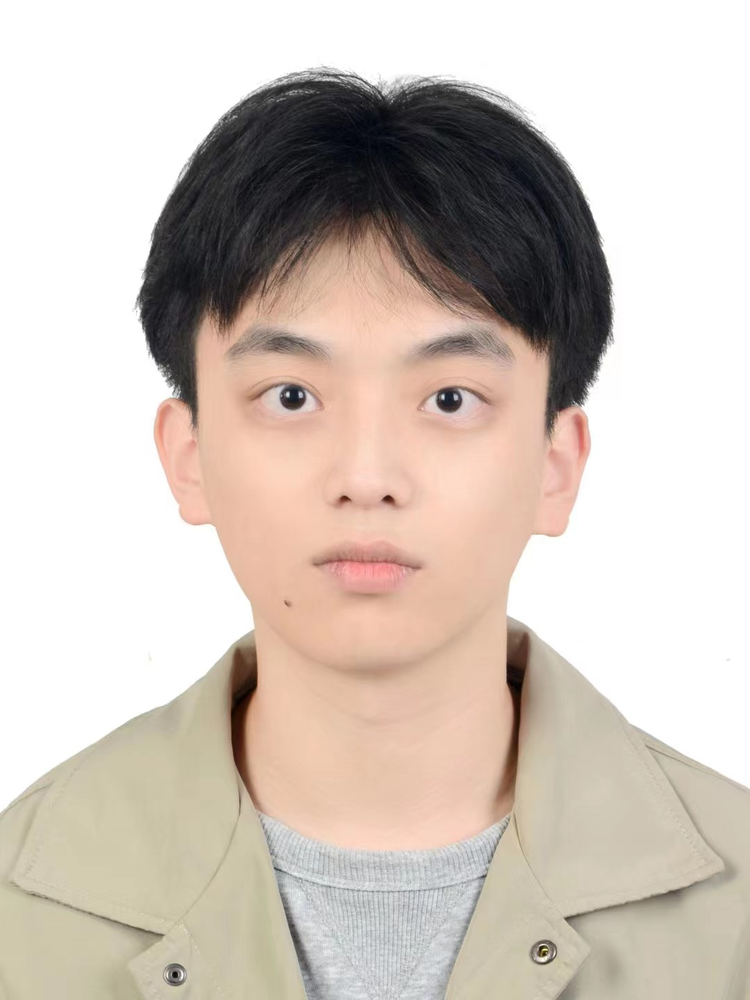
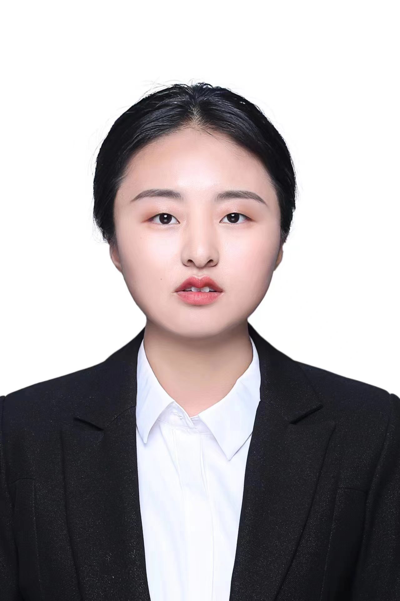

Principal Investigator
PhD Student
19级
(娜木汗) '19
[蒙古文自然语言处理]
22级
 Haolin Zuo
Haolin Zuo
(左昊霖) '22
[多模态情感识别]
(与 英国帝国理工、中科院自动化所、启元实验室 联合指导)
23级
 Yifan Hu
Yifan Hu
(胡一帆) '23
[对话语音合成]
(与 新加坡字节跳动 联合指导)
YuXuan Ma
(麻宇轩) '23
[多模态意图识别]

Muhan Na (娜木汗) '19
[蒙古文自然语言处理]
(左昊霖) '22
[多模态情感识别]
(与 英国帝国理工、中科院自动化所、启元实验室 联合指导)
(胡一帆) '23
[对话语音合成]
(与 新加坡字节跳动 联合指导)
(麻宇轩) '23
[多模态意图识别]
Master Student
22级
 Bin Liu
Bin Liu
(刘彬) '学硕
[韵律预测]
 Jinhua Zhang
Jinhua Zhang
(张锦华) '学硕
[语音鉴伪]
(与 香港中文大学（深圳）联合指导)
 Huan Liu
Huan Liu
(刘欢) '学硕
[语音情感识别]
 Jiatian Xi
Jiatian Xi
(席嘉甜) '专硕
[语音编辑]
(与 浙江大学 联合指导)
 Zening Ma
Zening Ma
(马泽宁) '专硕
[自监督预训练模型]
 Kailin Liang
Kailin Liang
(梁凯麟) '专硕
[语音情感迁移]
23级
(高溥) '学硕
[Speech]
 Yuan Zhao
Yuan Zhao
(赵源) '学硕
[Video Dubbing]
(王召阳) '专硕
[Talking Head Generation]
HongHu Xian
(鲜鹄鸿) '专硕
[Emotion Recognition]
ShuWei He
(何树伟) '专硕
[Speech Synthesis]
(戈绍丽) '专硕
[SNN]
(与 上海交通大学 联合指导)
ZhenQi Jia
(贾真琦) '专硕
[Speech]
HongYu Yuan
(袁宏宇) '专硕
[LLM]
(与 华南理工大学 联合指导)
(刘彬) '学硕
[韵律预测]
(张锦华) '学硕
[语音鉴伪]
(与 香港中文大学（深圳）联合指导)
(刘欢) '学硕
[语音情感识别]
(席嘉甜) '专硕
[语音编辑]
(与 浙江大学 联合指导)
(马泽宁) '专硕
[自监督预训练模型]
(梁凯麟) '专硕
[语音情感迁移]

Fu Gao (高溥) '学硕
[Speech]
(赵源) '学硕
[Video Dubbing]

ZhaoYang Wang (王召阳) '专硕
[Talking Head Generation]
(鲜鹄鸿) '专硕
[Emotion Recognition]
(何树伟) '专硕
[Speech Synthesis]

ShaoLi Ge (戈绍丽) '专硕
[SNN]
(与 上海交通大学 联合指导)
(贾真琦) '专硕
[Speech]
(袁宏宇) '专硕
[LLM]
(与 华南理工大学 联合指导)